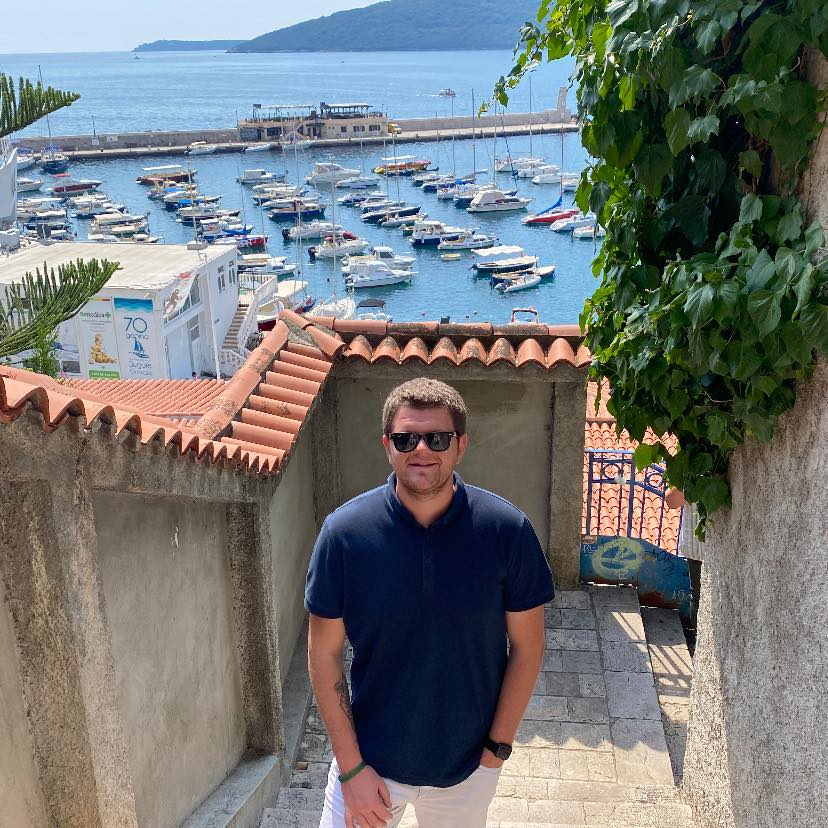

Haris Bublaku, Physical Therapist
04/06/1996
Education and training
- 14/09/2015 - 09/06/2017 Associate degree of Orthotics and Prosthetics Technology - Trakya University
- 14/09/2017 - 04/07/2021 BSc in Physiotherapy and Rehabilitation - Trakya University
Work Experience
-
Intern of Physiotherapy and Rehabilitation - 31/05/2020 - 01/07/2020
- Physical Therapist - Current - Prizren.Kosovo - 12/09/2021
Job Skills
- Manual Therapy
- Dry Needling
- Graston Technique
- Cupping Therapy
- Acupucture
Certificates
- Course of palpation, surface anatomy, assesment and mangement of
neuromusculoskeletal of the thoracic, cervical, TMJ and upper extremity.
- Course of palpation, surface anatomy, assesment and mangement of
lumbosacral and lower extremity.
- Foot Sole Pressure Analysis and Clinical Interpretation workshop.
Language Skills
- Albanian (Native)
- Turkish (Native)
- Enlish (Fluent)
- German (Intermediate)